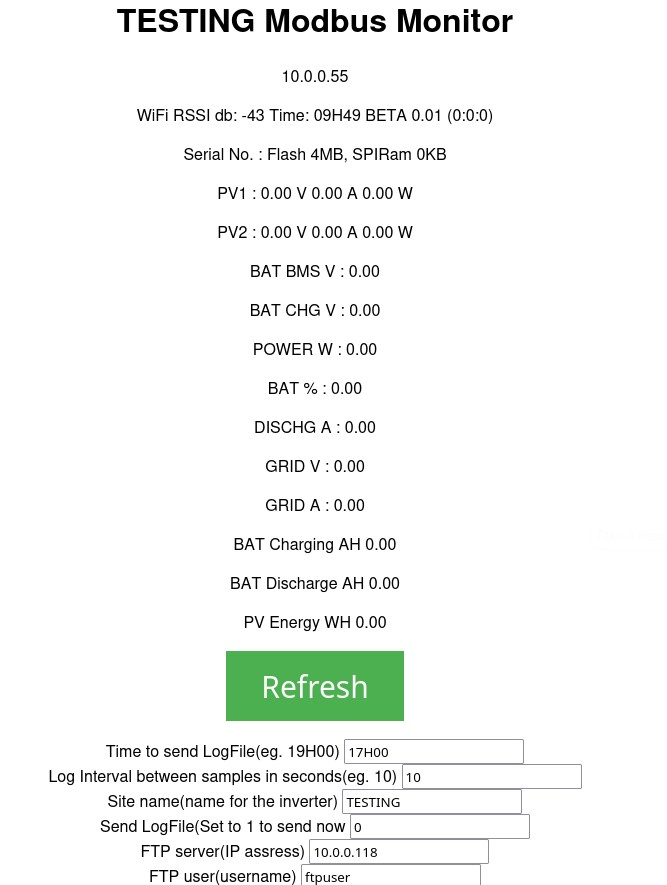
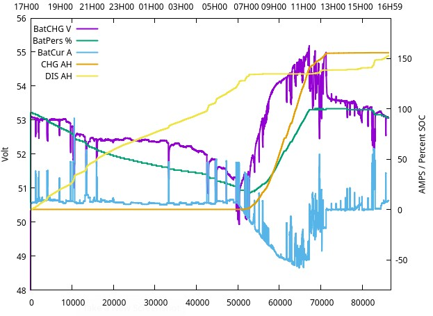

I wanted to read data from my Deye Inverter (Moddle SUN-5K-SG03LP1-EU) but my model do not have the RS486 plug fitted as shown in the Deye manual that mention it is "available on SOME modles". So RS232 is the only option. I downloaded 3 programs for ESP32 that claim to read RS232 data, but none worked om my inverter. The Modbus address they use are not valid/available on my inverter RS232 port. I could not find any documentation on the Internet on Deye RS232 Modbus protocol. (If you have it please send to "EunomiaSolar" at gmail.) I spend a whole week experimenting with an ESP32 and this program to search for the data I needed on my inverter.I found 9600 Baud, 8 bits, no parity, 1 stop bit works fine. You can find my experiment in : RS232RegisterSearcher Then I wrote a sketch to diaplay the registers I found on the serial console in an infinate loop: BasicRS232DeyeReader And finaly a fully usable App that display these registers via WiFi on a browser and generate a “LogYY-MM-DD_hh_mm.csv” file with entries every 10 seconds and transfer this 0.5 GB file via FTP to a PC ftp server that run somewhere on the WiFi network. ModbusMonitor
The “.csv” file look like this: Seq;PV1_V;PV1_A;PV1_W;PV2_V;PV2_A;PV2_W;POW W;BMS V;CHG V;%;DIS A;CHG AH;DIS AH;PV WH 10; 11.10; 0.00; 0.00; 11.10; 0.10; 1.00; -51.00; 55.20; 53.33; 74.00; -0.69; 0.00;... 21; 11.10; 0.00; 0.00; 11.00; 0.10; 1.00; -50.00; 55.20; 53.33; 74.00; -0.69; 0.00;... 33; 11.10; 0.00; 0.00; 11.10; 0.10; 1.00; -50.00; 55.20; 53.33; 74.00; -0.68; 0.00;... 45; 11.10; 0.00; 0.00; 11.10; 0.10; 1.00; -50.00; 55.20; 53.33; 74.00; -0.67; 0.00;... 57; 11.10; 0.00; 0.00; 11.10; 0.10; 1.00; -51.00; 53.63; 53.33; 74.00; -0.67; 0.14;... 69; 11.20; 0.00; 0.00; 11.20; 0.10; 1.00; -50.00; 55.20; 53.33; 74.00; -0.68; 0.14;... 81; 11.20; 0.00; 0.00; 11.20; 0.10; 1.00; -50.00; 55.20; 53.33; 74.00; -0.71; 0.14;... 93; 11.20; 0.00; 0.00; 11.20; 0.10; 1.00; -50.00; 55.20; 53.33; 74.00; -0.67; 0.14;... 105;11.30; 0.00; 0.00; 11.20; 0.10; 1.00; -50.00; 55.20; 53.33; 74.00; -0.69; 0.14;... I use the following script to generate a graph with “gnuplot” : set datafile separator ';' set key autotitle columnhead # use the first line as title set ylabel "Volt" # label for the Y axis set xlabel 'Time' # label for the X axis set x2label '17H00 19H00 21H00 23H00 01H00 03H00 05H00 07H00 09H00 11H00 13H00 15H00 16H59' # label for the X2 axis set y2tics # enable second axis set ytics nomirror # dont show the tics on that side set y2label "AMPS / Percent SOC" # label for second axis set xrange [0:87000] set yrange [48:56] set y2range [-80:190] set key left top # 1 2 3 4 5 6 7 8 9 10 11 # Seq;Power W;BatBMS V;BatCHG V;GRID V;GRID A;BatPers %;BatCur A;CHG tot AH;DIS tot AH;Pv AH plot "MBmonLog2026-05-28_17H06.csv" \ using 1:4 with lines lw 1, '' \ using 1:7 with lines axis x1y2 lw 1, '' \ using 1:8 with lines axis x1y2 lw 1, '' \ using 1:9 with lines axis x1y2 lw 1, '' \ using 1:10 with lines axis x1y2 lw 1, '' And I get :